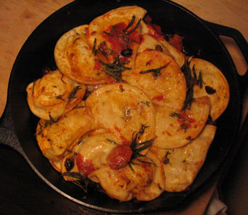

Pierogies à la Provençale
Pierogies are so versatile. It’s one of the only packaged foods I regularly eat, and the price doesn’t seem to have gone up in the last ten years. I have been enjoying them on a regular basis since I was in high school, when I learned how easy they are to cook. I used to just boil them, sauté them until brown, and then add salt, pepper, and parmesan or cheddar cheese. In 15 minutes I could have a good meal. I ate them at least once a week in college, when I was poor and lazy. I’ve gotten a little fancier and more adventurous since then, but I essentially make them the same way.
Tonight, with leftover ingredients from my daube, I made what I call pierogies à la provençale, with canned Progresso tomatoes, niçoise olives, fresh rosemary and thyme, and shredded cheddar cheese. I realize that cheddar isn’t very provençale, but it is in my refrigerator, which is far more important than authenticity. Besides, how French are pierogies? Not at all.
I browned the pierogies, herbs, and vegetables in the pan, added the cheese, and then stuck it all under the broiler for about five minutes. The result was very satisfying:

Aren’t you proud of me eating all these olives? I know my Uncle Ted is, that olive-gobbling nancy boy. I’m really surprised at how much I’m enjoying them, since they are one of my original food phobias. I think it’s because I ate them for the first time in my daube, and in that context I consumed them happily. Again, with the pierogies, they worked in the dish, which was good, so I liked them again. I have yet to remove one from the container and put it in my mouth unadorned, but I feel that moment can’t be too far off.
So you see, it is possible to get over our food issues. Just as Jeffrey Steingarten figured out, repeated exposure is the best method. It helps to eat whatever it is in an otherwise comfortable context, in my case pierogies or a beef stew.
Does this mean I’ll start mincing greasy little anchovy fillets every day? Hmm, I think I’ll be happy with my olives for now and conquer that next year.
Comments
i am still steadfastly refusing leafy things.
All cuisines have some type of filled dumpling thing, even the French, although I can’t think off the top of my head what they call them. BTW, you don’t have to boil them; just letting them sit in really hot tap water while you make the sauce or fry the onions, and then putting them in the frying pan, is good enough.
Mommy
If only my apartment had hot tap water. It’s literally faster to bring water to a boil in the electric kettle or on the stove than it is for the water to get hot.
I guess the closest French equivalent would be the crepe. It’s a terrible thing to lose your mind.
Add a comment